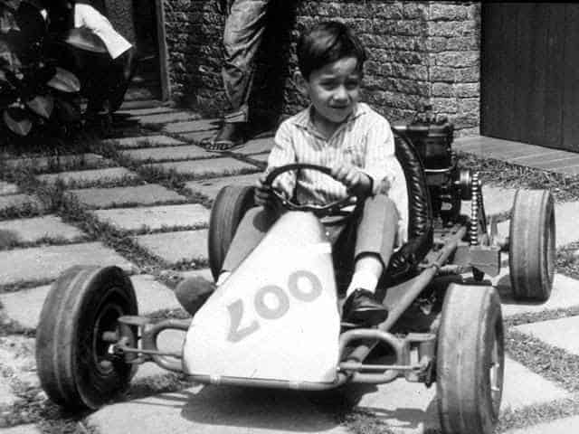
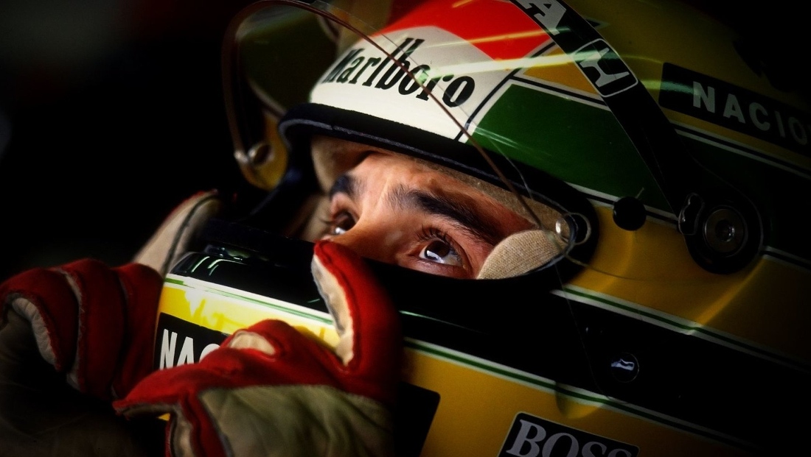

Curiosidades de Ayrton Senna
- Senna confesaba que en la curva de Eau Rouge en el Circuit de Spa-Francorchamps hablaba con Dios.
- En cada gran premio, Senna acostumbraba a dar dos vueltas desde que salía del pit lane, hasta colocarse en la parrilla de salida. En el Gran Premio de San Marino de 1994, minutos antes de su fatal accidente, dió tres vueltas.
- Senna era un piloto muy agresivo en las pistas y muy tímido fuera de ellas.
- Fue muy religioso. Antes de cada gran premio, acostumbraba a leer en el motorhome algún pasaje de la biblia.
- Fue superado por Michael Schumacher en todos los records (excepto en el de 6 victorias en el Gran Premio de Mónaco, cinco de ellas consecutivas), quedando en algunos la intriga de que hubiera pasado de no haber muerto.
- Se le atribuye un romance con la conocida actriz de películas en tono subido y luego animadora de programas para niños Xuxa. A ésta se la vio muy acongojada en el velorio, a pesar de haber finiquitado la relación hacia tiempo.
- Al principio de su carrera se hacia llamar "Ayrton da Silva", con el apellido de su padre. Posteriormente cambió el apellido paterno por el materno haciéndose llamar "Ayrton Senna".
- Para sorpresa de muchos. Un día en el que le preguntaron quien era el mejor piloto que ha enfrentado, el respondió: Terry Fullerton. Todos pensaban que contestaría que fue Prost, Mansell o tal vez otro de la Fórmula 1, algunos periodistas ni conocían el hombre que había nombrado. Fullerton era un piloto con el que se enfrentó en sus épocas del karting.
- Tras el gran premio de Japón de 1993, dio un puñetazo a Eddie Irvine
- Senna en el año 1989 partió en todos los Grandes Premios en la primera fila de la parrilla


Además de las múltiples ceremonias que rememoran a Senna, también se ha hecho una estatua de él en Imola. En el circuito de Interlagos hay una curvas en forma de "S" que recibe el nombre de "Senna S"...